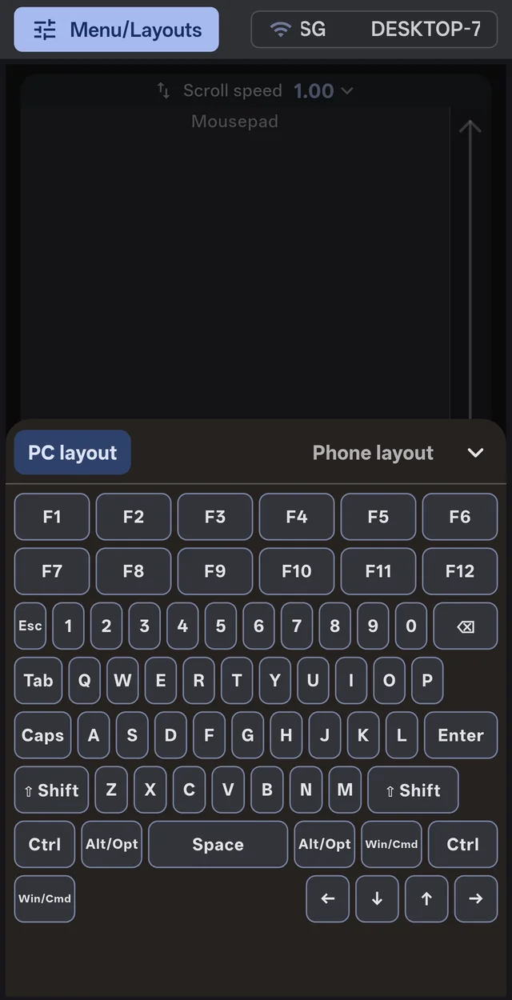

휴대폰이 컨트롤러가 됩니다.
PC, Mac, TV, 태블릿을 위한 게임패드, 키보드와 마우스, TV 리모컨, 슬라이드 리모컨.
Google Play에서 받기
무료. 블루투스로 연결하면 상대 기기에 아무것도 설치할 필요가 없습니다.

원하는 방식으로 연결
Companion으로 Wi‑Fi 연결
Windows, 선택 사항가장 낮은 지연 시간. PC를 자동으로 찾아 주고, 휴대폰 최대 16대로 동시에 플레이할 수 있습니다.
브라우저나 SmartScreen 경고가 표시되나요?
Companion은 새로 나온 소프트웨어라 Windows와 브라우저가 아직 알아보지 못합니다. 새 소프트웨어에서는 흔한 일입니다.
- 브라우저에 흔히 다운로드되지 않는 파일이라고 표시되는 경우: 다운로드 목록(Ctrl + J)을 열고 파일 메뉴에서 유지를 선택한 다음, 다시 물으면 그래도 유지를 선택하세요.
- "Windows의 PC 보호" 화면이 나타나는 경우: 추가 정보를 클릭한 다음 실행을 클릭하세요.
- 설치 프로그램이 ViGEmBus 드라이버를 추가할 수 있도록 사용자 계정 컨트롤 요청을 승인하세요.
설치 프로그램은 오픈 소스 ViGEmBus 드라이버가 없을 때만 추가하며, 이를 통해 게임이 휴대폰을 Xbox 컨트롤러로 인식합니다. Wi‑Fi를 사용하려면 Windows 방화벽에서 개인 네트워크에 대해 Companion을 허용하세요.
휴대폰 속 진짜 컨트롤러
스틱, 트리거, 범퍼, 방향 패드. 게임에서 실제 컨트롤러로 인식하므로 바로 작동합니다.


- 플로팅 스틱엄지가 닿는 곳에 스틱이 나타납니다.
- 스틱 누르기스틱을 두 번 탭하면 눌러집니다.
- 함께 즐기는 멀티플레이Windows PC 한 대에 휴대폰 최대 16대, 각각 별도의 컨트롤러로.
게임패드 그 이상
메뉴에서 레이아웃을 전환하세요. 같은 앱, 같은 연결 그대로.
-

마우스터치패드, 클릭, 스크롤, 단축키. -

키보드F 키와 단축키까지 모든 키. -

TV 리모컨어떤 TV 앱에서든 볼륨, 재생, 방향 키. -

슬라이드 리모컨PowerPoint, Google 슬라이드, Canva.
앱의 다른 기능

- 무료 다운로드Google Play에서.
- 계정 불필요열고 바로 플레이.
- 내 네트워크 안에서만입력은 휴대폰에서 기기로 바로 전달됩니다.

어떤 컨트롤러든 테스트
모든 버튼, 스틱, 트리거의 입력을 브라우저에서 실시간으로 확인하세요. Xbox, PlayStation, PocketPad 지원.
게임패드 테스터 열기
휴대폰을 들고, 플레이를 누르세요.
Google Play에서 받기
Android용 무료. Windows용 Companion은 선택 사항입니다.